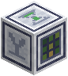
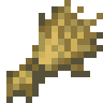

预报机

预报机观察周围那些会推进的方块，记下它们的变化：熔炉、烟熏炉、高炉、酿造台、制造机、冶炼机和植物。给它一个学会了这类方块接下来会怎样的模型，如果模型的预报与实际吻合，它就让它们超前运行：从模型中抽出它们接下来的几次查看，并让方块真的变成那样。
 合成
合成


观察
它观察周围四格内的一切，范围是同一层及上下各一层，每个方块记一行。
**机器。**每做一件东西，它就查看每台熔炉、烟熏炉、高炉、酿造台、制造机和冶炼机八次，记下这件东西做到了哪儿：刚开始是 a，做到八分之七是 h。正在工作的熔炉会写下
abcdefghabcdefghabcdefgh
机器被看到闲着两次后，这一行结束：aa。烟熏炉烧得比熔炉快一倍，查看得也勤一倍，所以它的一行读起来一样，偶尔差一个字母。熔炉在一件东西做到一半时烧完了燃料，就会冷下来，每过一刻冷两刻，它的一行也随之倒退：abcdefdbaa。
**作物。**每二十秒，它查看一次所有作物：小麦、胡萝卜、马铃薯、甜菜根、南瓜和西瓜的茎、甜浆果、可可、下界疣和树苗。作物的一行是它每次查看时的生长阶段，种下时为 0，成熟时到它的最后一个阶段（小麦是 7），被看到成熟两次后这一行结束。
00000011111111122222223333333334444445555555666666677
只有方块自己做到的才算数。被收割、被踩坏或被施了骨粉的作物会另起一行，所以它的各行只记录田地真实的样子。在日志槽放入田间日志，即可保存一份副本。
无序合成



方块的模型
学会了接下来会发生什么的模型，就是它那个世界的模型，而预报机要的也不过如此。在模型核心上用预报训练一个：预报数据集收录了许多田地和机器的记录行。
无序合成

机器有自己的节奏。知道它现在做到哪儿，它的下一次查看就几乎定了，所以一个笼统学过机器的模型，也能预报你的机器。
作物就是另一回事了。作物长得多快取决于它的田地：耕地湿润还是干燥，排列整齐还是拥挤。从许多田地学来的模型，预期的是一块普通田地的生长。这对有些田地足够接近，对另一些则差得很远。
要预报你自己的田地，就用它来训练。把预报机的田间日志单独放进核心的一个数据槽，模型就会学到这块田的节奏。它对田地的整体把握会变差，甚至可能通不过预报测试：这是把一块田拟合好的代价。若与预报数据集放在一起，日志只能把模型拉过去一半。
校准
预报只有平均而言准确，才值得据此行动。预报机用它观察到的一切检验模型，仍在记录中的行也算在内：最先长完的作物恰好是长得最快的那些，只看已完成的行，会让预期过高的模型显得更好。作物和机器分开检验：作物要自行生长满 100 个阶段，机器要按自己的节奏做完 100 个八分之一件，也就是十来件。每次查看时，它把模型预期方块推进的量加总，再除以方块实际推进的量：

- 与 1 相差不超过 11%，这些方块每过一次查看，它就推进四次。
- 不超过 25%，推进两次。
- 差得更远，它就拒绝让这个模型管这些方块。
界面先显示附近方块的俯视图，再按用标签选中的那一类，显示从每个阶段或每个八分之一起每次查看推进了多少：琥珀色是方块的实际，青色是模型的预期。模型若对幼苗期望过高，或对老株期望过低，在这里一看便知。下面每类各占一行，先显示到目前为止看到的进度，之后显示模型有多接近、让它们快了几倍。被拒绝的模型会在这些方块每多推进 25 时重新检验，任何模型发生改变时也会重新检验。
超前运行
每次查看时，每株生长中作物的那一行都会交给模型，模型按其概率抽出这株作物下一次查看时的生长阶段，再下一次，次数以模型挣得的为限。作物随即长到抽出的阶段。
每次查看机器时，它的那一行也同样交给模型，机器随即把模型抽出的进度一点点做完：每过一次查看推进四次的熔炉，在做一件的时间里做完四件，每件用的燃料不变。
抽出的每一次查看都是模型自己的工作。回答得慢的模型，或忙着应付别的请求的服务器，能推进的就少。模型写出的行，或机器超前运行时经过的行，都不会被记下：日志只记录方块自己做到的。
超前运行的方块会闪烁，跑得越快闪得越快：×16 以内是青色，再快就是琥珀色。
预报机 II
预报机 II观察和检验的方式一样，但模型越接近，它让方块超前得越多：与方块实际的差距在 5% 以内，每过一次查看推进八次；在 2.5% 以内，推进十六次。它超前的每一次查看都要模型抽出一次，所以 ×16 的方块在世界每过一次查看时要向模型要十五次；慢的模型或忙碌的服务器推进得少些。制造机用 Transformer 光掩模制造它。
只学过一般机器的模型会预计一批东西随时可能做完，所以对永远不断料的熔炉总会少估几个百分点。再学过这台预报机自己日志的模型，就知道得更清楚。
预报机 III
预报机 III能做预报机 II 能做的一切，还能储存电力，最多 4,000,000 FE，通过电力线缆输入，并把它花在爆发上：三十秒内，周围模型受信任的那几类机器和作物，都按你选的速度运行，最快 ×256。
一次爆发有三种代价。模型决定最快能多快：是它超前运行这类方块速度的十六倍，所以 ×256 需要模型与这些方块的差距在 2.5% 以内。算力也有要求：×32 需要 4 点算力，速度每翻一倍，算力也要翻一倍，×256 需要 32 点。一个冷却良好的 90 nm 训练加速器提供 1 点算力，制程越细的设备提供得越多。可以让它们直接相连、隔着其他加速器相连，或用互连线连接。前四个单独放置的加速器不耗电，其余设备要供电。电力则为每一刻付账：每台机器每多运行一刻耗 1 FE，八株作物算一台机器，所以 ×256 下十六台机器每刻耗 4,080 FE。它一次最多运行十六台机器。电力用完，爆发就结束。
和所有超前运行的方块一样，爆发运行过的方块的那几行不会被记下。
制造机用 Transformer 光掩模制造它。
沙漏
沙漏在你带着它时存下时间，每过一秒存一秒，最多存一小时。制造机用注意力光掩模制造它，耗用一个张量机壳、四块晶圆和两块权重晶体。
潜行使用一台预报机来绑定它。之后对那台预报机能让其超前运行的那类机器或作物使用它：只要那台预报机已加载，方块在同一维度的任何地方都行。方块会以两倍速度运行三十秒。在这期间再对它使用一次，速度就再翻一倍，并从那时起再持续三十秒，最多十六倍。每一步花掉的存储时间是上一步的两倍：两倍速花三十秒，十六倍速花四分钟。
它只对预报机的模型通过了检验的那类方块起作用：模型在机器上通不过检验时，沙漏也不会对机器起作用。预报机从不记下沙漏加速过的方块的那一行。
玻璃板时钟张量机壳权重晶体堆肥桶预报机纸小麦橡木木板云杉木板白桦木板丛林木板金合欢木板深色橡木木板苍白橡木木板绯红木板诡异木板红树木板竹板樱花木板田间日志红石粉预报数据集